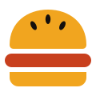
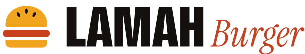

Le Lamah
95 000 GNFDouble steak smashé, cheddar affiné, oignons caramélisés, sauce Lamah, pain brioché.
Direction « Charbon & Or » : la générosité franche d’un fast-food, la tenue d’une maison haut de gamme. Tokens réels du site (assets/css/tokens.css).
Logo — masters vectoriels (assets/brand)



Emblème : trois formes (pain, steak, base) + trois graines. Wordmark : Bricolage Grotesque 800 condensé, « Burger » en Instrument Serif italique. Texte vectorisé, sans dépendance de police.
Couleurs
Contrastes : crème / charbon 16,4:1 · charbon / or 9,1:1 · braise / papier 4,7:1 · braise foncée / kraft 5,4:1. L’or n’est jamais utilisé en texte sur fond clair.
Typographie
Conakry · Grillé à la flamme
Le burger, en grand.
Grillé à la minute, jamais à l’avance.
Texte courant en Instrument Sans : la rapidité d’un fast-food, l’exigence d’une grande table. Lecture confortable sur l’image comme sur le papier.
Boutons & liens
Lien : Itinéraire
Lien sur clair : Voir la carte complète
Composant — carte menu
Double steak smashé, cheddar affiné, oignons caramélisés, sauce Lamah, pain brioché.
Direction des images (Higgsfield)
Objectif 24–35 mm, faible profondeur de champ en intérieur. Aucun texte, logo ou marque visible dans les images générées. Tons chauds dominants, bleu nuit en contrepoint à l’extérieur.